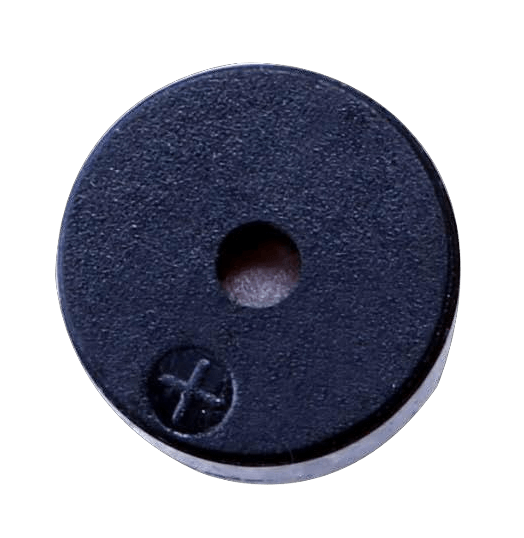
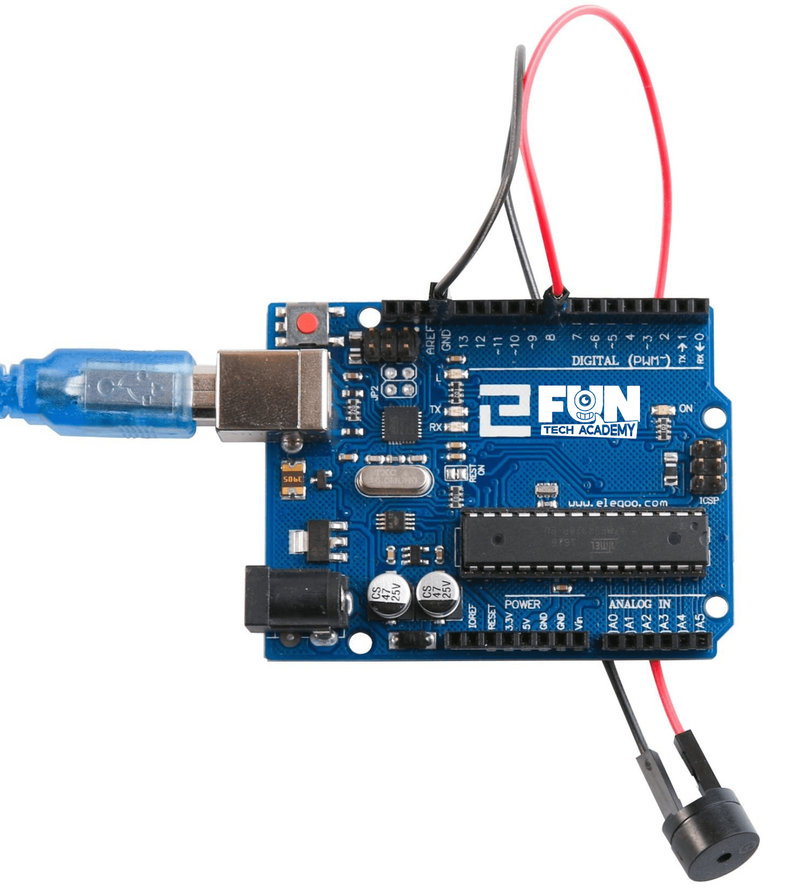
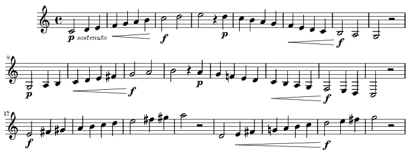

En este tema, aprenderemos a cómo utilizar una señal acústica pasiva. El propósito del experimento es generar ocho sonidos con una duración de 0,5 segundos cada uno: Do alto (523 Hz), Re (587 Hz), Mi (659 Hz), Fa (698 Hz), Sol (784 Hz), La (880 Hz), Si (988 Hz) y hacer agudos (1047 Hz).
(1) x Placa Arduino
(1) x Zumbador pasivo
(2) x F M cables (cables de hembra a macho)
El principio de funcionamiento del zumbador pasivo se basa en utilizar la modulación por ancho de pulso (PWM)
para generar audio. Debido al cambio en la frecuencia de vibración, se pueden generar diferentes sonidos.
Por ejemplo, enviando un pulso de 523Hz, se puede generar un sonido alto y con un pulso de 587Hz, puede generar
un sonido de rango medio. Debemos tener cuidado de no utilizar la función analogWrite( ) con la placa de
Arduino para generar un pulso de sonido, ya que la salida de pulso de analógico (de escritura) se fija a (500 Hz).

El cableado del zumbador conectado a la placa Arduino será: rojo (positivo) al pin 8 y el cable negro (negativo) a la tierra.
Si tenemos todo el cableado bien, deberíamos tener algo como en la imagen, de no ser así debemos revisar los apartados anteriores.

Una vez efectuado todo el cableado, descargaremos el script del siguiente
link y lo cargaremos como hemos aprendido.
Necesitaremos una librería de C++ que descargaremos en este otro
link
Como ya sabemos las frecuencias de las distintas notas, ahora tendremos que hacer sonar una melodía.
El resto consistirá en codificar mediante la instrucción "tone" una melodía sencilla que seamos capaces de
reconocer.
